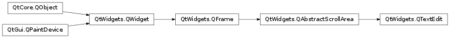

QTextEdit¶
Inherited by: QTextBrowser
Synopsis¶
Functions¶
- def
acceptRichText() - def
alignment() - def
anchorAt(pos) - def
autoFormatting() - def
canPaste() - def
createStandardContextMenu() - def
createStandardContextMenu(position) - def
currentCharFormat() - def
currentFont() - def
cursorForPosition(pos) - def
cursorRect() - def
cursorRect(cursor) - def
cursorWidth() - def
document() - def
documentTitle() - def
ensureCursorVisible() - def
extraSelections() - def
find(exp[, options=QTextDocument.FindFlags()]) - def
find(exp[, options=QTextDocument.FindFlags()]) - def
fontFamily() - def
fontItalic() - def
fontPointSize() - def
fontUnderline() - def
fontWeight() - def
inputMethodQuery(query, argument) - def
isReadOnly() - def
isUndoRedoEnabled() - def
lineWrapColumnOrWidth() - def
lineWrapMode() - def
mergeCurrentCharFormat(modifier) - def
moveCursor(operation[, mode=QTextCursor.MoveAnchor]) - def
overwriteMode() - def
placeholderText() - def
print_(printer) - def
setAcceptRichText(accept) - def
setAutoFormatting(features) - def
setCurrentCharFormat(format) - def
setCursorWidth(width) - def
setDocument(document) - def
setDocumentTitle(title) - def
setExtraSelections(selections) - def
setLineWrapColumnOrWidth(w) - def
setLineWrapMode(mode) - def
setOverwriteMode(overwrite) - def
setPlaceholderText(placeholderText) - def
setReadOnly(ro) - def
setTabChangesFocus(b) - def
setTabStopDistance(distance) - def
setTabStopWidth(width) - def
setTextCursor(cursor) - def
setTextInteractionFlags(flags) - def
setUndoRedoEnabled(enable) - def
setWordWrapMode(policy) - def
tabChangesFocus() - def
tabStopDistance() - def
tabStopWidth() - def
textBackgroundColor() - def
textColor() - def
textCursor() - def
textInteractionFlags() - def
toHtml() - def
toPlainText() - def
wordWrapMode() - def
zoomInF(range)
Virtual functions¶
- def
canInsertFromMimeData(source) - def
createMimeDataFromSelection() - def
doSetTextCursor(cursor) - def
insertFromMimeData(source) - def
loadResource(type, name)
Slots¶
- def
append(text) - def
clear() - def
copy() - def
cut() - def
insertHtml(text) - def
insertPlainText(text) - def
paste() - def
redo() - def
scrollToAnchor(name) - def
selectAll() - def
setAlignment(a) - def
setCurrentFont(f) - def
setFontFamily(fontFamily) - def
setFontItalic(b) - def
setFontPointSize(s) - def
setFontUnderline(b) - def
setFontWeight(w) - def
setHtml(text) - def
setPlainText(text) - def
setText(text) - def
setTextBackgroundColor(c) - def
setTextColor(c) - def
undo() - def
zoomIn([range=1]) - def
zoomOut([range=1])
Signals¶
- def
copyAvailable(b) - def
currentCharFormatChanged(format) - def
cursorPositionChanged() - def
redoAvailable(b) - def
selectionChanged() - def
textChanged() - def
undoAvailable(b)
Detailed Description¶
ThePySide2.QtWidgets.QTextEditclass provides a widget that is used to edit and display both plain and rich text.
Introduction and Concepts¶
PySide2.QtWidgets.QTextEditis an advanced WYSIWYG viewer/editor supporting rich text formatting using HTML-style tags. It is optimized to handle large documents and to respond quickly to user input.
PySide2.QtWidgets.QTextEditworks on paragraphs and characters. A paragraph is a formatted string which is word-wrapped to fit into the width of the widget. By default when reading plain text, one newline signifies a paragraph. A document consists of zero or more paragraphs. The words in the paragraph are aligned in accordance with the paragraph’s alignment. Paragraphs are separated by hard line breaks. Each character within a paragraph has its own attributes, for example, font and color.
PySide2.QtWidgets.QTextEditcan display images, lists and tables. If the text is too large to view within the text edit’s viewport, scroll bars will appear. The text edit can load both plain text and rich text files. Rich text is described using a subset of HTML 4 markup, refer to the Supported HTML Subset page for more information.If you just need to display a small piece of rich text use
PySide2.QtWidgets.QLabel.The rich text support in Qt is designed to provide a fast, portable and efficient way to add reasonable online help facilities to applications, and to provide a basis for rich text editors. If you find the HTML support insufficient for your needs you may consider the use of Qt WebKit, which provides a full-featured web browser widget.
The shape of the mouse cursor on a
PySide2.QtWidgets.QTextEditisQt.IBeamCursorby default. It can be changed through thePySide2.QtWidgets.QAbstractScrollArea.viewport()‘s cursor property.
Using QTextEdit as a Display Widget¶
PySide2.QtWidgets.QTextEditcan display a large HTML subset, including tables and images.The text is set or replaced using
PySide2.QtWidgets.QTextEdit.setHtml()which deletes any existing text and replaces it with the text passed in thePySide2.QtWidgets.QTextEdit.setHtml()call. If you callPySide2.QtWidgets.QTextEdit.setHtml()with legacy HTML, and then callPySide2.QtWidgets.QTextEdit.toHtml(), the text that is returned may have different markup, but will render the same. The entire text can be deleted withPySide2.QtWidgets.QTextEdit.clear().Text itself can be inserted using the
PySide2.QtGui.QTextCursorclass or using the convenience functionsPySide2.QtWidgets.QTextEdit.insertHtml(),PySide2.QtWidgets.QTextEdit.insertPlainText(),PySide2.QtWidgets.QTextEdit.append()orPySide2.QtWidgets.QTextEdit.paste().PySide2.QtGui.QTextCursoris also able to insert complex objects like tables or lists into the document, and it deals with creating selections and applying changes to selected text.By default the text edit wraps words at whitespace to fit within the text edit widget. The
PySide2.QtWidgets.QTextEdit.setLineWrapMode()function is used to specify the kind of line wrap you want, orNoWrapif you don’t want any wrapping. CallPySide2.QtWidgets.QTextEdit.setLineWrapMode()to set a fixed pixel widthFixedPixelWidth, or character column (e.g. 80 column)FixedColumnWidthwith the pixels or columns specified withPySide2.QtWidgets.QTextEdit.setLineWrapColumnOrWidth(). If you use word wrap to the widget’s widthWidgetWidth, you can specify whether to break on whitespace or anywhere withPySide2.QtWidgets.QTextEdit.setWordWrapMode().The
PySide2.QtWidgets.QTextEdit.find()function can be used to find and select a given string within the text.If you want to limit the total number of paragraphs in a
PySide2.QtWidgets.QTextEdit, as for example it is often useful in a log viewer, then you can usePySide2.QtGui.QTextDocument‘s maximumBlockCount property for that.
Read-only Key Bindings¶
When
PySide2.QtWidgets.QTextEditis used read-only the key bindings are limited to navigation, and text may only be selected with the mouse:
Keypresses Action Up Moves one line up. Down Moves one line down. Left Moves one character to the left. Right Moves one character to the right. PageUp Moves one (viewport) page up. PageDown Moves one (viewport) page down. Home Moves to the beginning of the text. End Moves to the end of the text. Alt+Wheel Scrolls the page horizontally (the Wheel is the mouse wheel). Ctrl+Wheel Zooms the text. Ctrl+A Selects all text. The text edit may be able to provide some meta-information. For example, the
PySide2.QtWidgets.QTextEdit.documentTitle()function will return the text from within HTML<title>tags.Note
Zooming into HTML documents only works if the font-size is not set to a fixed size.
Using QTextEdit as an Editor¶
All the information about using
PySide2.QtWidgets.QTextEditas a display widget also applies here.The current char format’s attributes are set with
PySide2.QtWidgets.QTextEdit.setFontItalic(),PySide2.QtWidgets.QTextEdit.setFontWeight(),PySide2.QtWidgets.QTextEdit.setFontUnderline(),PySide2.QtWidgets.QTextEdit.setFontFamily(),PySide2.QtWidgets.QTextEdit.setFontPointSize(),PySide2.QtWidgets.QTextEdit.setTextColor()andPySide2.QtWidgets.QTextEdit.setCurrentFont(). The current paragraph’s alignment is set withPySide2.QtWidgets.QTextEdit.setAlignment().Selection of text is handled by the
PySide2.QtGui.QTextCursorclass, which provides functionality for creating selections, retrieving the text contents or deleting selections. You can retrieve the object that corresponds with the user-visible cursor using thePySide2.QtWidgets.QTextEdit.textCursor()method. If you want to set a selection inPySide2.QtWidgets.QTextEditjust create one on aPySide2.QtGui.QTextCursorobject and then make that cursor the visible cursor usingPySide2.QtWidgets.QTextEdit.setTextCursor(). The selection can be copied to the clipboard withPySide2.QtWidgets.QTextEdit.copy(), or cut to the clipboard withPySide2.QtWidgets.QTextEdit.cut(). The entire text can be selected usingPySide2.QtWidgets.QTextEdit.selectAll().When the cursor is moved and the underlying formatting attributes change, the
PySide2.QtWidgets.QTextEdit.currentCharFormatChanged()signal is emitted to reflect the new attributes at the new cursor position.The
PySide2.QtWidgets.QTextEdit.textChanged()signal is emitted whenever the text changes (as a result ofPySide2.QtWidgets.QTextEdit.setText()or through the editor itself).
PySide2.QtWidgets.QTextEditholds aPySide2.QtGui.QTextDocumentobject which can be retrieved using thePySide2.QtWidgets.QTextEdit.document()method. You can also set your own document object usingPySide2.QtWidgets.QTextEdit.setDocument().
PySide2.QtGui.QTextDocumentprovides anPySide2.QtGui.QTextDocument.isModified()function which will return true if the text has been modified since it was either loaded or since the last call to setModified with false as argument. In addition it provides methods for undo and redo.
Drag and Drop¶
PySide2.QtWidgets.QTextEditalso supports custom drag and drop behavior. By default,PySide2.QtWidgets.QTextEditwill insert plain text, HTML and rich text when the user drops data of these MIME types onto a document. ReimplementPySide2.QtWidgets.QTextEdit.canInsertFromMimeData()andPySide2.QtWidgets.QTextEdit.insertFromMimeData()to add support for additional MIME types.For example, to allow the user to drag and drop an image onto a
PySide2.QtWidgets.QTextEdit, you could the implement these functions in the following way:def canInsertFromMimeData(source): if source.hasImage: return True else: return QTextEdit.canInsertFromMimeData(source)We add support for image MIME types by returning true. For all other MIME types, we use the default implementation.
void TextEdit::insertFromMimeData( const QMimeData *source ) { if (source->hasImage()) { QImage image = qvariant_cast<QImage>(source->imageData()); QTextCursor cursor = this->textCursor(); QTextDocument *document = this->document(); document->addResource(QTextDocument::ImageResource, QUrl("image"), image); cursor.insertImage("image"); } }We unpack the image from the
PySide2.QtCore.QVariantheld by the MIME source and insert it into the document as a resource.
Editing Key Bindings¶
The list of key bindings which are implemented for editing:
Keypresses Action Backspace Deletes the character to the left of the cursor. Delete Deletes the character to the right of the cursor. Ctrl+C Copy the selected text to the clipboard. Ctrl+Insert Copy the selected text to the clipboard. Ctrl+K Deletes to the end of the line. Ctrl+V Pastes the clipboard text into text edit. Shift+Insert Pastes the clipboard text into text edit. Ctrl+X Deletes the selected text and copies it to the clipboard. Shift+Delete Deletes the selected text and copies it to the clipboard. Ctrl+Z Undoes the last operation. Ctrl+Y Redoes the last operation. Left Moves the cursor one character to the left. Ctrl+Left Moves the cursor one word to the left. Right Moves the cursor one character to the right. Ctrl+Right Moves the cursor one word to the right. Up Moves the cursor one line up. Down Moves the cursor one line down. PageUp Moves the cursor one page up. PageDown Moves the cursor one page down. Home Moves the cursor to the beginning of the line. Ctrl+Home Moves the cursor to the beginning of the text. End Moves the cursor to the end of the line. Ctrl+End Moves the cursor to the end of the text. Alt+Wheel Scrolls the page horizontally (the Wheel is the mouse wheel). To select (mark) text hold down the Shift key whilst pressing one of the movement keystrokes, for example, Shift+Right will select the character to the right, and Shift+Ctrl+Right will select the word to the right, etc.
-
class
PySide2.QtWidgets.QTextEdit([parent=nullptr])¶ -
class
PySide2.QtWidgets.QTextEdit(text[, parent=nullptr]) Parameters: - text – unicode
- parent –
PySide2.QtWidgets.QWidget
Constructs an empty
PySide2.QtWidgets.QTextEditwith parentparent.Constructs a
PySide2.QtWidgets.QTextEditwith parentparent. The text edit will display the texttext. The text is interpreted as html.
-
PySide2.QtWidgets.QTextEdit.LineWrapMode¶ Constant Description QTextEdit.NoWrap QTextEdit.WidgetWidth QTextEdit.FixedPixelWidth QTextEdit.FixedColumnWidth
-
PySide2.QtWidgets.QTextEdit.AutoFormattingFlag¶ Constant Description QTextEdit.AutoNone Don’t do any automatic formatting. QTextEdit.AutoBulletList Automatically create bullet lists (e.g. when the user enters an asterisk (‘*’) in the left most column, or presses Enter in an existing list item. QTextEdit.AutoAll Apply all automatic formatting. Currently only automatic bullet lists are supported.
-
PySide2.QtWidgets.QTextEdit.acceptRichText()¶ Return type: PySide2.QtCore.bool
-
PySide2.QtWidgets.QTextEdit.alignment()¶ Return type: PySide2.QtCore.Qt.AlignmentReturns the alignment of the current paragraph.
-
PySide2.QtWidgets.QTextEdit.anchorAt(pos)¶ Parameters: pos – PySide2.QtCore.QPointReturn type: unicode Returns the reference of the anchor at position
pos, or an empty string if no anchor exists at that point.
-
PySide2.QtWidgets.QTextEdit.append(text)¶ Parameters: text – unicode Appends a new paragraph with
textto the end of the text edit.Note
The new paragraph appended will have the same character format and block format as the current paragraph, determined by the position of the cursor.
See also
PySide2.QtWidgets.QTextEdit.currentCharFormat()QTextCursor.blockFormat()
-
PySide2.QtWidgets.QTextEdit.autoFormatting()¶ Return type: PySide2.QtWidgets.QTextEdit.AutoFormatting
-
PySide2.QtWidgets.QTextEdit.canInsertFromMimeData(source)¶ Parameters: source – PySide2.QtCore.QMimeDataReturn type: PySide2.QtCore.boolThis function returns
trueif the contents of the MIME data object, specified bysource, can be decoded and inserted into the document. It is called for example when during a drag operation the mouse enters this widget and it is necessary to determine whether it is possible to accept the drag and drop operation.Reimplement this function to enable drag and drop support for additional MIME types.
-
PySide2.QtWidgets.QTextEdit.canPaste()¶ Return type: PySide2.QtCore.boolReturns whether text can be pasted from the clipboard into the textedit.
-
PySide2.QtWidgets.QTextEdit.clear()¶ Deletes all the text in the text edit.
Note that the undo/redo history is cleared by this function.
-
PySide2.QtWidgets.QTextEdit.copy()¶ Copies any selected text to the clipboard.
-
PySide2.QtWidgets.QTextEdit.copyAvailable(b)¶ Parameters: b – PySide2.QtCore.bool
-
PySide2.QtWidgets.QTextEdit.createMimeDataFromSelection()¶ Return type: PySide2.QtCore.QMimeDataThis function returns a new MIME data object to represent the contents of the text edit’s current selection. It is called when the selection needs to be encapsulated into a new
PySide2.QtCore.QMimeDataobject; for example, when a drag and drop operation is started, or when data is copied to the clipboard.If you reimplement this function, note that the ownership of the returned
PySide2.QtCore.QMimeDataobject is passed to the caller. The selection can be retrieved by using thePySide2.QtWidgets.QTextEdit.textCursor()function.
-
PySide2.QtWidgets.QTextEdit.createStandardContextMenu(position)¶ Parameters: position – PySide2.QtCore.QPointReturn type: PySide2.QtWidgets.QMenuThis function creates the standard context menu which is shown when the user clicks on the text edit with the right mouse button. It is called from the default
PySide2.QtWidgets.QTextEdit.contextMenuEvent()handler and it takes thepositionin document coordinates where the mouse click was. This can enable actions that are sensitive to the position where the user clicked. The popup menu’s ownership is transferred to the caller.
-
PySide2.QtWidgets.QTextEdit.createStandardContextMenu() Return type: PySide2.QtWidgets.QMenuThis function creates the standard context menu which is shown when the user clicks on the text edit with the right mouse button. It is called from the default
PySide2.QtWidgets.QTextEdit.contextMenuEvent()handler. The popup menu’s ownership is transferred to the caller.We recommend that you use the (
PySide2.QtCore.QPoint) version instead which will enable the actions that are sensitive to where the user clicked.
-
PySide2.QtWidgets.QTextEdit.currentCharFormat()¶ Return type: PySide2.QtGui.QTextCharFormatReturns the char format that is used when inserting new text.
-
PySide2.QtWidgets.QTextEdit.currentCharFormatChanged(format)¶ Parameters: format – PySide2.QtGui.QTextCharFormat
-
PySide2.QtWidgets.QTextEdit.currentFont()¶ Return type: PySide2.QtGui.QFontReturns the font of the current format.
-
PySide2.QtWidgets.QTextEdit.cursorForPosition(pos)¶ Parameters: pos – PySide2.QtCore.QPointReturn type: PySide2.QtGui.QTextCursorreturns a
PySide2.QtGui.QTextCursorat positionpos(in viewport coordinates).
-
PySide2.QtWidgets.QTextEdit.cursorPositionChanged()¶
-
PySide2.QtWidgets.QTextEdit.cursorRect(cursor)¶ Parameters: cursor – PySide2.QtGui.QTextCursorReturn type: PySide2.QtCore.QRectreturns a rectangle (in viewport coordinates) that includes the
cursor.
-
PySide2.QtWidgets.QTextEdit.cursorRect() Return type: PySide2.QtCore.QRectreturns a rectangle (in viewport coordinates) that includes the cursor of the text edit.
-
PySide2.QtWidgets.QTextEdit.cursorWidth()¶ Return type: PySide2.QtCore.int
-
PySide2.QtWidgets.QTextEdit.cut()¶ Copies the selected text to the clipboard and deletes it from the text edit.
If there is no selected text nothing happens.
-
PySide2.QtWidgets.QTextEdit.doSetTextCursor(cursor)¶ Parameters: cursor – PySide2.QtGui.QTextCursorThis provides a hook for subclasses to intercept cursor changes.
-
PySide2.QtWidgets.QTextEdit.document()¶ Return type: PySide2.QtGui.QTextDocument
-
PySide2.QtWidgets.QTextEdit.documentTitle()¶ Return type: unicode
-
PySide2.QtWidgets.QTextEdit.ensureCursorVisible()¶ Ensures that the cursor is visible by scrolling the text edit if necessary.
-
PySide2.QtWidgets.QTextEdit.extraSelections()¶ Return type: Returns previously set extra selections.
-
PySide2.QtWidgets.QTextEdit.find(exp[, options=QTextDocument.FindFlags()])¶ Parameters: - exp – unicode
- options –
PySide2.QtGui.QTextDocument.FindFlags
Return type: PySide2.QtCore.boolFinds the next occurrence of the string,
exp, using the givenoptions. Returnstrueifexpwas found and changes the cursor to select the match; otherwise returnsfalse.
-
PySide2.QtWidgets.QTextEdit.find(exp[, options=QTextDocument.FindFlags()]) Parameters: - exp –
PySide2.QtCore.QRegExp - options –
PySide2.QtGui.QTextDocument.FindFlags
Return type: PySide2.QtCore.boolThis is an overloaded function.
Finds the next occurrence, matching the regular expression,
exp, using the givenoptions. TheQTextDocument.FindCaseSensitivelyoption is ignored for this overload, useQRegExp.caseSensitivityinstead.Returns
trueif a match was found and changes the cursor to select the match; otherwise returnsfalse.- exp –
-
PySide2.QtWidgets.QTextEdit.fontFamily()¶ Return type: unicode Returns the font family of the current format.
-
PySide2.QtWidgets.QTextEdit.fontItalic()¶ Return type: PySide2.QtCore.boolReturns
trueif the font of the current format is italic; otherwise returns false.
-
PySide2.QtWidgets.QTextEdit.fontPointSize()¶ Return type: PySide2.QtCore.qrealReturns the point size of the font of the current format.
-
PySide2.QtWidgets.QTextEdit.fontUnderline()¶ Return type: PySide2.QtCore.boolReturns
trueif the font of the current format is underlined; otherwise returns false.
-
PySide2.QtWidgets.QTextEdit.fontWeight()¶ Return type: PySide2.QtCore.intReturns the font weight of the current format.
-
PySide2.QtWidgets.QTextEdit.inputMethodQuery(query, argument)¶ Parameters: - query –
PySide2.QtCore.Qt.InputMethodQuery - argument – object
Return type: - query –
-
PySide2.QtWidgets.QTextEdit.insertFromMimeData(source)¶ Parameters: source – PySide2.QtCore.QMimeDataThis function inserts the contents of the MIME data object, specified by
source, into the text edit at the current cursor position. It is called whenever text is inserted as the result of a clipboard paste operation, or when the text edit accepts data from a drag and drop operation.Reimplement this function to enable drag and drop support for additional MIME types.
-
PySide2.QtWidgets.QTextEdit.insertHtml(text)¶ Parameters: text – unicode Convenience slot that inserts
textwhich is assumed to be of html formatting at the current cursor position.It is equivalent to:
edit.textCursor().insertHtml(fragment)
Note
When using this function with a style sheet, the style sheet will only apply to the current block in the document. In order to apply a style sheet throughout a document, use
QTextDocument.setDefaultStyleSheet()instead.
-
PySide2.QtWidgets.QTextEdit.insertPlainText(text)¶ Parameters: text – unicode Convenience slot that inserts
textat the current cursor position.It is equivalent to
edit.textCursor().insertText(text)
-
PySide2.QtWidgets.QTextEdit.isReadOnly()¶ Return type: PySide2.QtCore.bool
-
PySide2.QtWidgets.QTextEdit.isUndoRedoEnabled()¶ Return type: PySide2.QtCore.bool
-
PySide2.QtWidgets.QTextEdit.lineWrapColumnOrWidth()¶ Return type: PySide2.QtCore.int
-
PySide2.QtWidgets.QTextEdit.lineWrapMode()¶ Return type: PySide2.QtWidgets.QTextEdit.LineWrapMode
-
PySide2.QtWidgets.QTextEdit.loadResource(type, name)¶ Parameters: - type –
PySide2.QtCore.int - name –
PySide2.QtCore.QUrl
Return type: Loads the resource specified by the given
typeandname.This function is an extension of
QTextDocument.loadResource().See also
QTextDocument.loadResource()- type –
-
PySide2.QtWidgets.QTextEdit.mergeCurrentCharFormat(modifier)¶ Parameters: modifier – PySide2.QtGui.QTextCharFormatMerges the properties specified in
modifierinto the current character format by callingQTextCursor.mergeCharFormaton the editor’s cursor. If the editor has a selection then the properties ofmodifierare directly applied to the selection.See also
QTextCursor.mergeCharFormat()
-
PySide2.QtWidgets.QTextEdit.moveCursor(operation[, mode=QTextCursor.MoveAnchor])¶ Parameters: - operation –
PySide2.QtGui.QTextCursor.MoveOperation - mode –
PySide2.QtGui.QTextCursor.MoveMode
Moves the cursor by performing the given
operation.If
modeisQTextCursor.KeepAnchor, the cursor selects the text it moves over. This is the same effect that the user achieves when they hold down the Shift key and move the cursor with the cursor keys.See also
QTextCursor.movePosition()- operation –
-
PySide2.QtWidgets.QTextEdit.overwriteMode()¶ Return type: PySide2.QtCore.bool
-
PySide2.QtWidgets.QTextEdit.paste()¶ Pastes the text from the clipboard into the text edit at the current cursor position.
If there is no text in the clipboard nothing happens.
To change the behavior of this function, i.e. to modify what
PySide2.QtWidgets.QTextEditcan paste and how it is being pasted, reimplement the virtualPySide2.QtWidgets.QTextEdit.canInsertFromMimeData()andPySide2.QtWidgets.QTextEdit.insertFromMimeData()functions.
-
PySide2.QtWidgets.QTextEdit.placeholderText()¶ Return type: unicode
-
PySide2.QtWidgets.QTextEdit.print_(printer)¶ Parameters: printer – PySide2.QtGui.QPagedPaintDeviceConvenience function to print the text edit’s document to the given
printer. This is equivalent to calling the print method on the document directly except that this function also supportsQPrinter.Selectionas print range.See also
QTextDocument.print()
-
PySide2.QtWidgets.QTextEdit.redo()¶ Redoes the last operation.
If there is no operation to redo, i.e. there is no redo step in the undo/redo history, nothing happens.
See also
-
PySide2.QtWidgets.QTextEdit.redoAvailable(b)¶ Parameters: b – PySide2.QtCore.bool
-
PySide2.QtWidgets.QTextEdit.scrollToAnchor(name)¶ Parameters: name – unicode Scrolls the text edit so that the anchor with the given
nameis visible; does nothing if thenameis empty, or is already visible, or isn’t found.
-
PySide2.QtWidgets.QTextEdit.selectAll()¶ Selects all text.
-
PySide2.QtWidgets.QTextEdit.selectionChanged()¶
-
PySide2.QtWidgets.QTextEdit.setAcceptRichText(accept)¶ Parameters: accept – PySide2.QtCore.bool
-
PySide2.QtWidgets.QTextEdit.setAlignment(a)¶ Parameters: a – PySide2.QtCore.Qt.AlignmentSets the alignment of the current paragraph to
a. Valid alignments areQt.AlignLeft,Qt.AlignRight,Qt.AlignJustifyandQt.AlignCenter(which centers horizontally).
-
PySide2.QtWidgets.QTextEdit.setAutoFormatting(features)¶ Parameters: features – PySide2.QtWidgets.QTextEdit.AutoFormatting
-
PySide2.QtWidgets.QTextEdit.setCurrentCharFormat(format)¶ Parameters: format – PySide2.QtGui.QTextCharFormatSets the char format that is be used when inserting new text to
formatby callingQTextCursor.setCharFormat()on the editor’s cursor. If the editor has a selection then the char format is directly applied to the selection.
-
PySide2.QtWidgets.QTextEdit.setCurrentFont(f)¶ Parameters: f – PySide2.QtGui.QFontSets the font of the current format to
f.
-
PySide2.QtWidgets.QTextEdit.setCursorWidth(width)¶ Parameters: width – PySide2.QtCore.int
-
PySide2.QtWidgets.QTextEdit.setDocument(document)¶ Parameters: document – PySide2.QtGui.QTextDocument
-
PySide2.QtWidgets.QTextEdit.setDocumentTitle(title)¶ Parameters: title – unicode
-
PySide2.QtWidgets.QTextEdit.setExtraSelections(selections)¶ Parameters: selections – This function allows temporarily marking certain regions in the document with a given color, specified as
selections. This can be useful for example in a programming editor to mark a whole line of text with a given background color to indicate the existence of a breakpoint.See also
QTextEdit.ExtraSelectionPySide2.QtWidgets.QTextEdit.extraSelections()
-
PySide2.QtWidgets.QTextEdit.setFontFamily(fontFamily)¶ Parameters: fontFamily – unicode Sets the font family of the current format to
fontFamily.
-
PySide2.QtWidgets.QTextEdit.setFontItalic(b)¶ Parameters: b – PySide2.QtCore.boolIf
italicis true, sets the current format to italic; otherwise sets the current format to non-italic.
-
PySide2.QtWidgets.QTextEdit.setFontPointSize(s)¶ Parameters: s – PySide2.QtCore.qrealSets the point size of the current format to
s.Note that if
sis zero or negative, the behavior of this function is not defined.
-
PySide2.QtWidgets.QTextEdit.setFontUnderline(b)¶ Parameters: b – PySide2.QtCore.boolIf
underlineis true, sets the current format to underline; otherwise sets the current format to non-underline.
-
PySide2.QtWidgets.QTextEdit.setFontWeight(w)¶ Parameters: w – PySide2.QtCore.intSets the font weight of the current format to the given
weight, where the value used is in the range defined by theQFont.Weightenum.
-
PySide2.QtWidgets.QTextEdit.setHtml(text)¶ Parameters: text – unicode
-
PySide2.QtWidgets.QTextEdit.setLineWrapColumnOrWidth(w)¶ Parameters: w – PySide2.QtCore.int
-
PySide2.QtWidgets.QTextEdit.setLineWrapMode(mode)¶ Parameters: mode – PySide2.QtWidgets.QTextEdit.LineWrapMode
-
PySide2.QtWidgets.QTextEdit.setOverwriteMode(overwrite)¶ Parameters: overwrite – PySide2.QtCore.bool
-
PySide2.QtWidgets.QTextEdit.setPlaceholderText(placeholderText)¶ Parameters: placeholderText – unicode
-
PySide2.QtWidgets.QTextEdit.setPlainText(text)¶ Parameters: text – unicode Changes the text of the text edit to the string
text. Any previous text is removed.textis interpreted as plain text.Note that the undo/redo history is cleared by this function.
-
PySide2.QtWidgets.QTextEdit.setReadOnly(ro)¶ Parameters: ro – PySide2.QtCore.bool
-
PySide2.QtWidgets.QTextEdit.setTabChangesFocus(b)¶ Parameters: b – PySide2.QtCore.bool
-
PySide2.QtWidgets.QTextEdit.setTabStopDistance(distance)¶ Parameters: distance – PySide2.QtCore.qreal
-
PySide2.QtWidgets.QTextEdit.setTabStopWidth(width)¶ Parameters: width – PySide2.QtCore.int
-
PySide2.QtWidgets.QTextEdit.setText(text)¶ Parameters: text – unicode Sets the text edit’s
text. The text can be plain text or HTML and the text edit will try to guess the right format.Use
PySide2.QtWidgets.QTextEdit.setHtml()orPySide2.QtWidgets.QTextEdit.setPlainText()directly to avoid text edit’s guessing.
-
PySide2.QtWidgets.QTextEdit.setTextBackgroundColor(c)¶ Parameters: c – PySide2.QtGui.QColorSets the text background color of the current format to
c.
-
PySide2.QtWidgets.QTextEdit.setTextColor(c)¶ Parameters: c – PySide2.QtGui.QColorSets the text color of the current format to
c.
-
PySide2.QtWidgets.QTextEdit.setTextCursor(cursor)¶ Parameters: cursor – PySide2.QtGui.QTextCursorSets the visible
cursor.
-
PySide2.QtWidgets.QTextEdit.setTextInteractionFlags(flags)¶ Parameters: flags – PySide2.QtCore.Qt.TextInteractionFlags
-
PySide2.QtWidgets.QTextEdit.setUndoRedoEnabled(enable)¶ Parameters: enable – PySide2.QtCore.bool
-
PySide2.QtWidgets.QTextEdit.setWordWrapMode(policy)¶ Parameters: policy – PySide2.QtGui.QTextOption.WrapMode
-
PySide2.QtWidgets.QTextEdit.tabChangesFocus()¶ Return type: PySide2.QtCore.bool
-
PySide2.QtWidgets.QTextEdit.tabStopDistance()¶ Return type: PySide2.QtCore.qreal
-
PySide2.QtWidgets.QTextEdit.tabStopWidth()¶ Return type: PySide2.QtCore.int
-
PySide2.QtWidgets.QTextEdit.textBackgroundColor()¶ Return type: PySide2.QtGui.QColorReturns the text background color of the current format.
-
PySide2.QtWidgets.QTextEdit.textChanged()¶
-
PySide2.QtWidgets.QTextEdit.textColor()¶ Return type: PySide2.QtGui.QColorReturns the text color of the current format.
-
PySide2.QtWidgets.QTextEdit.textCursor()¶ Return type: PySide2.QtGui.QTextCursorReturns a copy of the
PySide2.QtGui.QTextCursorthat represents the currently visible cursor. Note that changes on the returned cursor do not affectPySide2.QtWidgets.QTextEdit‘s cursor; usePySide2.QtWidgets.QTextEdit.setTextCursor()to update the visible cursor.
-
PySide2.QtWidgets.QTextEdit.textInteractionFlags()¶ Return type: PySide2.QtCore.Qt.TextInteractionFlags
-
PySide2.QtWidgets.QTextEdit.toHtml()¶ Return type: unicode
-
PySide2.QtWidgets.QTextEdit.toPlainText()¶ Return type: unicode PySide2.QtCore.QStringconstReturns the text of the text edit as plain text.
See also
-
PySide2.QtWidgets.QTextEdit.undo()¶ Undoes the last operation.
If there is no operation to undo, i.e. there is no undo step in the undo/redo history, nothing happens.
See also
-
PySide2.QtWidgets.QTextEdit.undoAvailable(b)¶ Parameters: b – PySide2.QtCore.bool
-
PySide2.QtWidgets.QTextEdit.wordWrapMode()¶ Return type: PySide2.QtGui.QTextOption.WrapMode
-
PySide2.QtWidgets.QTextEdit.zoomIn([range=1])¶ Parameters: range – PySide2.QtCore.intZooms in on the text by making the base font size
rangepoints larger and recalculating all font sizes to be the new size. This does not change the size of any images.
-
PySide2.QtWidgets.QTextEdit.zoomInF(range)¶ Parameters: range – PySide2.QtCore.float
-
PySide2.QtWidgets.QTextEdit.zoomOut([range=1])¶ Parameters: range – PySide2.QtCore.intThis is an overloaded function.
Zooms out on the text by making the base font size
rangepoints smaller and recalculating all font sizes to be the new size. This does not change the size of any images.See also
© 2018 The Qt Company Ltd. Documentation contributions included herein are the copyrights of their respective owners. The documentation provided herein is licensed under the terms of the GNU Free Documentation License version 1.3 as published by the Free Software Foundation. Qt and respective logos are trademarks of The Qt Company Ltd. in Finland and/or other countries worldwide. All other trademarks are property of their respective owners.